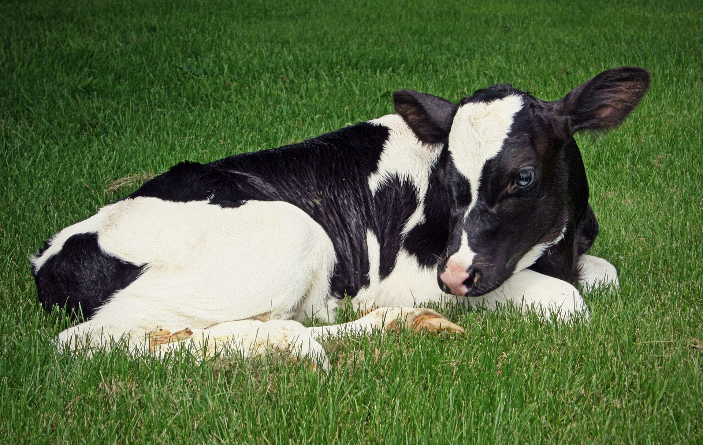

Imaginemos que tenemos las dos situaciones experimentales que se ilustran en la figura. El análisis de estas situaciones experimentales sugiere dos posible aproximaciones prácticas
¿qué modelos propondrías para analizarlos?
Si se supone ausencia de interacción entre Z y β, ambos casos se podría analizar con el mismo modelo:
\(Z_{i}\) es el efecto del tratamiento \(i,\dots, t\)
\(B_{j}\) es el efecto del tratamiento \(j,\dots, b\)
\(\varepsilon_{(ij)}\) es el error aleatorio
Errores de restricción a la aleatorización
Anderson (1970, 1974) notó que no podía ser que el mismo modelo fuera apropiado para dos situaciones tan distintas. Razonó que no se podían hacer inferencias sobre los bloques pues cada uno de ellos aparece sólo una vez.
¿Concuerdas en que no es posible estimar su efecto?
¿Cuál es el efecto de restringir la aleatorización en la asignación de los tratamientos?.
Anderson propuso incorporar en el modelo términos que dieran cuenta de restricciones en la aleatorización de las unidades experimentales. Llamó a estos términos “errores de restricción”, pues también sugirió que deberían ser considerados términos de efectos aleatorios.
En donde los términos tienen la misma interpretación de arriba, y lo que agregamos es:
\(\delta_{k(j)}\) , el componente de variación aleatoria introducido por la restricción a la aleatorización al formar bloques. Este error por lo pronto no es estimable.
\(\varepsilon_{m(ijk)}\) es el componente aleatorio derivado de la precisión de las mediciones.
El error de restricción de bloques representa las características particulares y aleatorias de cada conjunto de unidades que formen el bloque j (cosas como errores de medición, condiciones ambientales peculiares del bloque pero comunes en su interior, manipulación común al iinterior del bloque, etc.). Este nuevo término tiene estas características:
Es aleatorio (se asume se distribuye parrecido a una normal con observaciones realizadas independientemente: ~DNI(0, \(\sigma_{k}^2\))
No es estimable y tampoco lo son sus combinaciones, porque no hay grados de libertad.
Es útil en el modelo para facilitar identificar qué efectos se pueden poner a prueba mediante razones F. Esto se determina al examinar las esperanzas de cuadrados medios (ECM).
Es un efecto confundido (no se puede separar) del efecto de bloque o grupo de unidades experimentales.
¿Cómo se ve el análisis del modelo en un cuadro de ANOVA?
¿Qué tipo de efecto tienen los factores? ¿Qué se puede probar comparando cuadrados medios?
Con la propuesta de Anderson de incluir términos para representar el efecto de no aplicar aleatorización en forma completa, el cuadro de ANOVA se vería como se muestra enseguida. Hay que notar que en esta argumentación de Anderson, se está considerando un modelo en el que el término de interacción no se incluye. Esto hace que su efecto quede confundido con el error de medición, pero más importante, en el análisis de la varianza, este termino que incluye la estimación confundida de la interacción más la del error de medición, se convierte en el denominador para las pruebas de F . Por esta misma razón, los grados de libertad corresponden a los de la interacción, es decir el producto de los grados de libertad de los factores involucrados en la interacción.
¿Qué tipo de efecto tienen los factores? ¿Qué se puede probar
La idea de Anderson tiene validez general para experimentos completos y balanceados. Se puede utilizar para analizar con claridad el efecto de distintos arreglos experimentales que puedan interesar al investigador.
Ejemplo de aplicación del error de restricción en la planeación de experimentos

Se quieren probar 3 tipos de ración de alimentación (A, B, C), sobre el desempeño de vacas de la raza Holstein. Se dispone de 12 animales para realizar el ensayo. Se cuenta con corrales en los que caben hasta 4 animales en cada uno. Podemos optar por dar un tratamiento de alimentación a cada corral.
¿Consideras que hay algún inconvenientes en esta situación experimental?
El modelo que razonablemente describe esta situación sería:
Las reglas para el cálculo de los grados de libertad es la siguiente:
Para los términos entre paréntesis (componentes anidados en el diseño), multiplica los niveles que correspondan a los índices.
Para los términos fuera de paréntesis (componentes cruzados), multiplica (niveles-1) que correspondan a cada índice
Finalmente, multiplica los dos productos anteriores para obtener los grados de libertad correspondientes al componente de varianza.
Los grados de libertad de la varianza total es simplemente el número de unidades experimentales (o de observación) menos uno o la suma de los grados de libertad de todas las fuentes de variación consideradas, lo que permite tener una validación sencilla.
Así, en el caso que estamos viendo los números involucradas con este diseño son: raciones = 3 (índice i), Número de corrales por tratamiento = 1 (índice k) y finalmente vacas por corral= 4 (índice j). En estos términos:
La situación ahora es, cada ración la asigno a un corral en el que tengo dos animales, y repito todo el experimento considerando los corrales una vez. Esto implica que los corrales, representados por \(\delta\), influirán sobre las vacas que tienen dentro con dos cosas: 1) el efecto del tratamiento y 2) el efecto de las características peculiares del corral. Para controlar estas últimas lo que habría que hacer es aleatorizar los corrales entre las raciones. Para no introducir un error particular para los animales, habrá que aleatorizar las vacas entre los corrales. De esta manera, los efectos de sus peculiaridades se convierten en variaciones aleatorias, independientes que se traducen en el error de ´medición o residual.
El modelo es el mismo que en la situación anterior, pero ahora varían los términos estimables:
Los números de entidades involucradas con este diseño son: raciones = 3 (índice i), vacas por corral = 2 (índice k) y finalmente repeticiones del experimento completo = 2 (índice j):
Considera que estamos midiendo la mano izquierda y la derecha de varios individuos, las medidas están emparejadas dentro de cada individuo. Es decir, queremos controlar estadísticamente las diferencias entre individuos, así nos aseguramos que la mano izquierda del individuo A sea analizada en conjunto con la mano derecha del individuo A, ya que suponemos que alguien con una mano izquierda grande tendrá una mano derecha grande. Por lo tanto, la variable Individuo se incluirá en el modelo como una variable aleatoria. Se podría pensar que cada Individuo representa un bloque que incluye una medida para la mano izquierda y una medida para la mano derecha.
A B C D E F G H I J K L M N
Left 17.5 18.4 16.2 14.5 13.5 18.9 19.5 21.1 17.8 16.8 18.4 17.3 18.9 16.4
Right 17.6 18.5 15.9 14.9 13.7 18.9 19.5 21.5 18.5 17.1 18.9 17.5 19.5 16.5
O P
Left 17.5 15.0
Right 17.4 15.6
Analysis of Variance Table
Response: Length
Df Sum Sq Mean Sq F value Pr(>F)
Hand 1 0.451 0.4513 11.497 0.004034 **
Individual 15 114.680 7.6453 194.786 2.089e-14 ***
Residuals 15 0.589 0.0392
---
Signif. codes: 0 '***' 0.001 '**' 0.01 '*' 0.05 '.' 0.1 ' ' 1
Es cierto que el efecto de individuo queda raro en este modelo, pes nos lo reporta en estimadores que tienen sentido como si se tratara de un factor de efectos fijos, es decir que nos interesa decir algo específico sobre esos individuos y ningún otro. Esto obviamente nos es así. El factor individuo es de efectos aleatorios, simplemente que lm` no prevé esta situación. Los resultados apuntan en la dirección correcta y los valores del factor Hand son válidos. Lo podemos manejar razonablemente simplemente recordando que el individuo es de efectos aleatorios y que por tanto no tienen mucho sentido, generalmente, hacer referencia a los estimadores puntuales que produce la regresión. Lo que sí tiene interés es la estimación de las varianzas, que permite así corregir e idealmente lograr mayor precisión en la estimación en los tratamientos de interés. En este caso habría que notar que la varianza estimada en el residuo da cuenta tanto de la variación aleatoria que tenemos al medir las unidades experimentales como la del error de restricción asociado con las peculiaridades de, en este caso, cada persona que se midió: \(\sigma^{2} + t \sigma^{2}_{\delta}\) . La medición de esta varianza combinada, persona + sus peculiaridades = 7.6453, sugiere que es buena idea controlar su efecto. En esto mismos términos la varianza del factor hand es \(\sigma + t\sigma\^{2}_{\delta} + r\sigma^{2}_{H}\), lo qe hace válido probar el efecto fijo de hand.
\[
F = \frac {Mean Sq Hand} {Mn Sq error} = \frac {0.4513}{0.0392} = 11.497
\] con 1 y 15 grados de libertad. En R tenemos acceso a la distribbución de F con la función qfque calcula la probabilidad acumulada entre el dato q que le doy, así como los grados de libertad asociados.
Aunque la forma como analizamos estos datos no es la ideal para el caso, podemos ver que produce resultados perfectamente adecuados para la variable de interés, siempre y cuando seamos cocientes de que la función usada aquí en R, no maneja apropiadamente los factores de efectos aleatorios y por lo tanto no debemos hacer mayores interpretaciones de los términos correspondientes a esos factores.
Qué tanto tiempo puede “correr” un experimento
Cuando Fisher concibió hacer experimentos en la estación experimental de Rothamsted en Inglaterra, recurriendo al auxilio del enfoque estadístico que él y otros investigadores de la época idearon, pensaban a largo plazo. Encontré este documento que podría ser de su interés. La estación experimental tiene disponiible los datos de estos experimentos. Por ejemplo Este “dataset” son los rendimientos anuales de trigo de “parcelas selectas” del experimento de trigo que aún hoy corren en Broadbalk . La serie tiene los datos de 1852-1918, tal y como los usó R.A. Fisher para su artículo de 1921 ‘Studies in crop variation’.